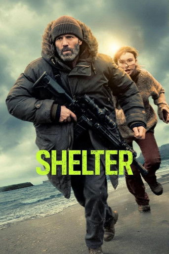
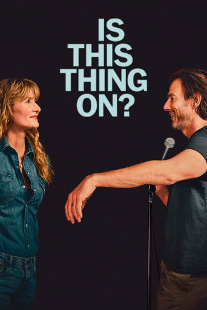
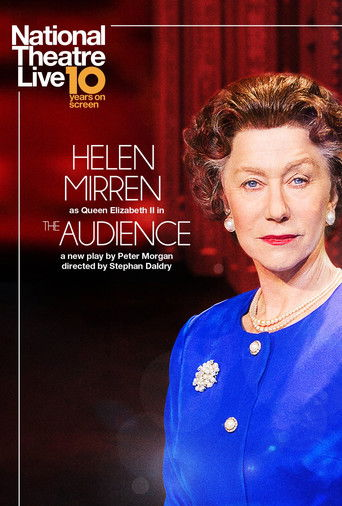
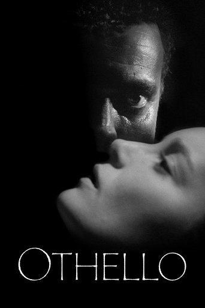
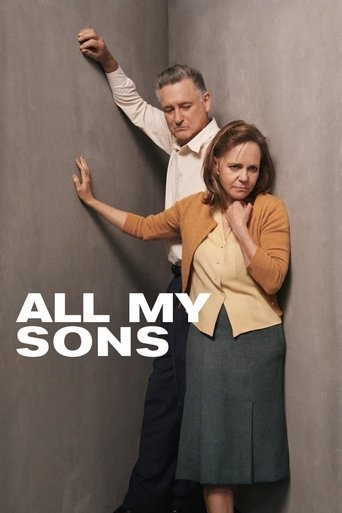

Shelter
107 min (1 hour 47 mins) 7.7/10 Action, Crime, Thriller
Director: Ric Roman Waugh
Writer(s): Ward Parry
Starring: Jason Statham, Bodhi Rae Breathnach, Bill Nighy
A man living in self-imposed exile on a remote island rescues a young girl from a violent storm, setting off a chain of events that forces him out of seclusion to protect her from enemies tied to his past.

Is This Thing On
121 min (2 hours 1 min) 7.0/10 Comedy, Drama
Director: Bradley Cooper
Writer(s): Mark Chappell, Will Arnett, Bradley Cooper, John Bishop
Starring: Will Arnett, Laura Dern, Andra Day, Bradley Cooper
As their marriage quietly unravels, Alex faces middle age and an impending divorce, seeking new purpose in the New York comedy scene while Tess confronts the sacrifices she made for their family—forcing them to navigate co-parenting, identity, and whether love can take a new form.

Hamnet
126 min (2 hours 6 mins) 7.8/10 Drama, Romance, History
Director: Chloé Zhao
Writer(s): Maggie O'Farrell, Chloé Zhao
Starring: Jessie Buckley, Paul Mescal
The powerful story of love and loss that inspired the creation of Shakespeare's timeless masterpiece, Hamlet.
Avatar: Fire and Ash
197 min (3 hours 17 mins) 7.3/10 Science Fiction, Adventure, Fantasy
Director: James Cameron
Writer(s): James Cameron, Shane Salerno, Amanda Silver, Rick Jaffa, Josh Friedman
Starring: Sam Worthington, Zoe Saldaña, Sigourney Weaver, Kate Winslet
In the wake of the devastating war against the RDA and the loss of their eldest son, Jake Sully and Neytiri face a new threat on Pandora: the Ash People, a violent and power-hungry Na'vi tribe led by the ruthless Varang. Jake's family must fight for their survival and the future of Pandora in a conflict that pushes them to their emotional and physical limits.
Sun 08 Feb
13:15Screen 3AD WA 2D Strobe
Wed 11 Feb

The Housemaid
131 min (2 hours 11 mins) 7.2/10 Mystery, Thriller
Director: Paul Feig
Writer(s): Rebecca Sonnenshine, Freida McFadden
Starring: Sydney Sweeney, Amanda Seyfried, Brandon Sklenar
Trying to escape her past, Millie Calloway accepts a job as a live-in housemaid for the wealthy Nina and Andrew Winchester. But what begins as a dream job quickly unravels into something far more dangerous—a sexy, seductive game of secrets, scandal, and power.

Song Sung Blue
132 min (2 hours 12 mins) 7.6/10 Drama, Music, Romance
Director: Craig Brewer
Writer(s): Craig Brewer
Starring: Hugh Jackman, Kate Hudson
Based on a true story, two down-on-their-luck musicians form a joyous Neil Diamond tribute band, proving it's never too late to find love and follow your dreams.

Marty Supreme
150 min (2 hours 30 mins) 7.8/10 Drama
Director: Josh Safdie
Writer(s): Josh Safdie, Ronald Bronstein
Starring: Timothée Chalamet, Gwyneth Paltrow, Odessa A'zion
Marty Mauser, a young man with a dream no one respects, goes to hell and back in pursuit of greatness.

Primate
89 min (1 hour 29 mins) 6.3/10 Horror, Thriller
Director: Johannes Roberts
Writer(s): Johannes Roberts, Ernest Riera
Starring: Jessica Alexander, Troy Kotsur, Victoria Wyant
Lucy, a college student, along with her friends, spend their vacation at her family's home in Hawaii, which includes her pet chimpanzee, Ben. However, when Ben contracts rabies after being bitten by a rabid animal, the group must fight for their lives in order to avoid the now-violent chimp.

Kangaroo
107 min (1 hour 47 mins) 6.5/10 Family, Comedy
Director: Kate Woods
Writer(s): Harry Cripps, Melina Marchetta
Starring: Lily Whiteley, Ryan Corr, Rachel House
Ex TV personality, Chris Masterman, becomes stranded in an Outback town outside Alice Springs. There, he teams up with 12-year-old Indigenous girl Charlie. The pair form an unlikely friendship and work together to rescue and rehabilitate orphaned joeys in the remote but stunning Outback community—an endeavour that proves to be life-changing for them both.
WOOLF WORKS - RBO 2025-26 Cinema Season
210 min (3 hours 30 mins)
Starring: To Be Announced
Virginia Woolf defied literary conventions to depict rich inner worlds - her heightened, startling and poignant reality. Resident Choreographer Wayne McGregor leads a luminous artistic...
Mon 09 Feb

National Theatre Live: The Audience
180 min (3 hours) 8.3/10 Drama, History
Director: Robin Lough
Writer(s): Peter Morgan
Starring: Helen Mirren, Michael Elwyn, Haydn Gwynne
For sixty years, Elizabeth II has met each of her twelve Prime Ministers in a weekly audience at Buckingham Palace, a meeting like no other in British public life, it is private.
GISELLE - RBO 2025-26 Cinema Season
210 min (3 hours 30 mins)
Starring: To Be Announced
The peasant girl Giselle has fallen in love with Albrecht. When she discovers that he is actually a nobleman promised to another, she kills herself...
Tue 03 Mar

Othello
165 min (2 hours 45 mins) 7.4/10 Drama
Director: Orson Welles
Writer(s): Jean Sacha, Orson Welles
Starring: Orson Welles (Othello), Micheál Mac Liammóir (Iago), Robert Coote (Roderigo), Suzanne Cloutier (Desdemona), Hilton Edwards (Brabantio), Nicholas Bruce (Lodovico), Michael Laurence (Michael Cassio), Fay Compton (Emilia), Doris Dowling (Bianca), Joan Fontaine (Page), Joseph Cotten (Senator (uncredited)), Robert Rietti (Lodovico (voice))
Manipulated by his jealous ensign Iago, the Moorish general Othello is driven to believe that his new wife Desdemona is unfaithful, setting in motion a chain of deception, jealousy, and violence that leads to tragedy.
SIEGFRIED - RBO 2025-26 Cinema Season
330 min (5 hours 30 mins)
Starring: To Be Announced
Sung in German with subtitles. Raised by a scheming dwarf and unaware of his true family origins, a young man embarks on an epic journey....
Tue 31 Mar

National Theatre Live: All My Sons
130 min (2 hours 10 mins) 8.5/10 Drama
Director: Ross MacGibbon
Writer(s): Arthur Miller
Starring: Bryan Cranston, Marianne Jean-Baptiste
America, 1947. Despite hard choices and even harder knocks, Joe and Kate Keller are a success story. They have built a home, raised two sons and established a thriving business. But nothing lasts forever and their contented lives, already shadowed by the loss of their eldest boy to war, are about to shatter. With the return of a figure from the past, long buried truths are forced to the surface and the price of their American dream is laid bare.
THE MAGIC FLUTE - RBO 2025-26 Cinema Season
210 min (3 hours 30 mins)
Starring: To Be Announced
Sung in German with subtitles. Princess Pamina has been captured. Her mother, the Queen of the Night, tasks the young Prince Tamino with her daughter's...
Tue 21 Apr
EUGENE ONEGIN - The MET Opera - RBO 2025-26 Cinema Season
245 min (4 hours 5 mins)
Starring: To Be Announced
Sung in Russian with English subtitles. Following her acclaimed 2024 company debut in Puccini's Madama Butterfly, soprano Asmik Grigorian returns to the Met as Tatiana,...
Tue 05 May

National Theatre Live: The Playboy of the Western World
150 min (2 hours 30 mins) Drama, Comedy
Director: Caitriona McLaughlin
Writer(s): John Millington Synge
Starring: Nicola Coughlan, Siobhán McSweeney, Éanna Hardwicke
Nicola Coughlan (Bridgerton) joins Éanna Hardwicke (The Sixth Commandment) and Siobhán McSweeney (Derry Girls) in John Millington Synge’s riveting play of youth and self-discovery. Pegeen Flaherty’s life is turned upside down when a young man walks into her pub claiming that he’s killed his father. Instead of being shunned, the killer becomes a local hero and begins to win hearts, that is until a second man unexpectedly arrives on the scene… Filmed live on stage at the National Theatre, Caitrí

National Theatre Live: Les Liaisons Dangereuses
150 min (2 hours 30 mins) 6.0/10 Drama, Romance
Director: Tony Grech-Smith, Josie Rourke
Writer(s): Choderlos de Laclos
Starring: Lesley Manville, Aidan Turner
Marquise de Merteuil, former lover of Vicomte de Valmont, incites him to corrupt the innocent Cécile de Volanges before her wedding night, but Valmont has targeted the peerlessly virtuous and beautiful Madame de Tourvel.